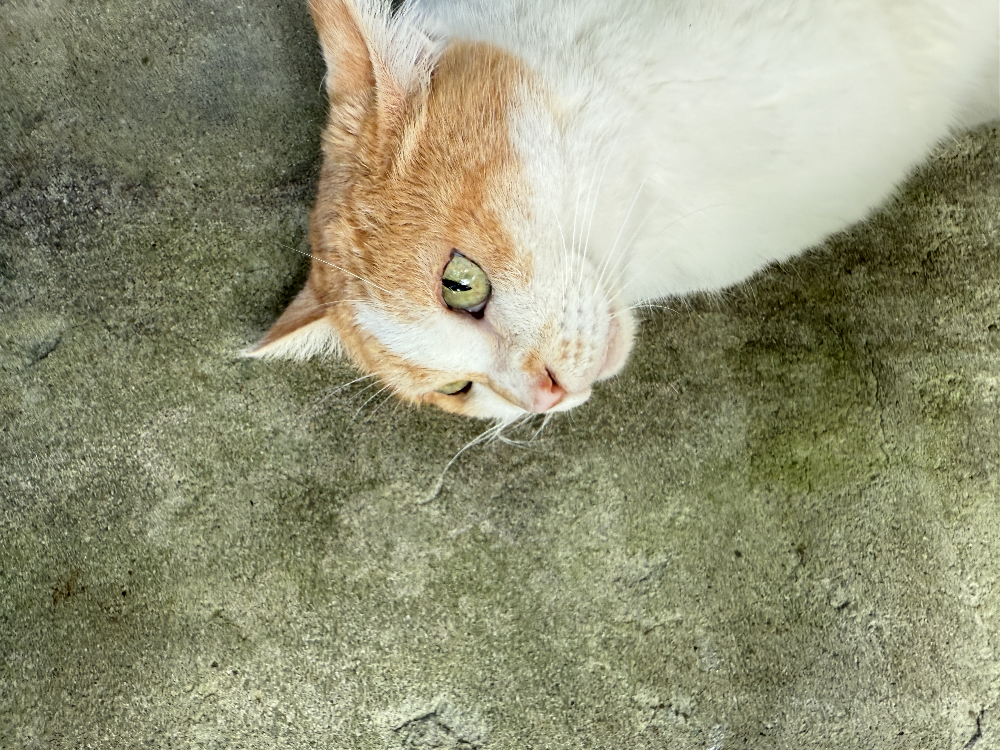

貓與阿公
20260524
繁中
My cat's nose is the color of soft baby pink, though from up close it carries a slight peachy tint. Around her nose are small patches of brown pigmentation. I gently touched her little nose with my fingertip. Grandpa used to say that if a cat is healthy, its nose should feel moist. Even though I knew Molly didn’t like it, I still tapped her nose lightly. It was cool and moist. I truly hoped that Molly was indeed a healthy little kitten. I also remembered Grandpa saying that 小柳丁 looked as elegant as if she were wearing white socks. I remembered how Grandpa would sometimes lock 小柳丁 in his room first so that I could hold her. Grandpa used to say that I am 小柳丁’s little owner. He always said such adorable things.
The love between 小柳丁 and me was nowhere near as deep as the love Grandpa and she shared. As time passed, and as the people around them changed, these two cats who ran and played throughout my life seemed to develop different expressions in their eyes. They became intertwined with people and family, sharing in moments of warmth and happiness while also witness sorrow, separation, and anger within the household. They were like reflections of the family itself, inseparably entangled with human lives. They became vessels for people’s grief and homes for their emotions.
Lately, I have often thought of Grandpa. He passed away on October 18, 2021, and this year will mark the fifth year since his death. During these past four years, I have not thought of him very often. Most of the time, I only remembered him when my mother spoke about the pain and sadness of missing him. Yet after feeling sad for a minute or two, my emotions would fade as my attention drifted elsewhere. It feels somewhat shallow and insincere. My mother is different. She often wakes with tears from her dreams and carries a deep grief that never truly disappears. Grief is an intensely painful, consuming, and continuous experience. The word suits my mother perfectly.
When you begin trying to understand yourself, you start wondering where your smiling eyes came from. They resemble my mother’s, yet perhaps they look even more like Grandpa’s. The problem is that I have begun to forget what Grandpa looked like. Thinking about it, even our face shapes seem somewhat alike. But when I try to focus more closely, I can no longer recall the shape of his nose, ears, or mouth. There is something frightening about being unable to reconstruct his face in my mind. Perhaps this is the most terrifying thing about death: everything becomes so distant. His voice, appearance, responses, and spirit can never be fully brought back.
Blood ties are such a remarkable thing. My mother looks like Grandpa, and I seem to resemble him as well. I wonder what Grandpa’s parents looked like. My mother’s sense of morality, her philosophy of life, and her inner world extend from Grandpa like a vine, long, resilient, and curling. His spirit climbed so deeply and firmly into her heart. Perhaps her talent for giving things amusing names, or the purity of her nature, also came from him. Grandpa’s spirit flows through us like blood, in our faces, in our gestures, and in the smallest movements we make. I do not possess even a fraction of Grandpa’s wisdom or knowledge, yet perhaps we share certain similarities. I can try to move toward becoming a little more like him. Perhaps that is the best way to honor his memory, to miss him, and, in the process, to better understand both Grandpa and myself.
